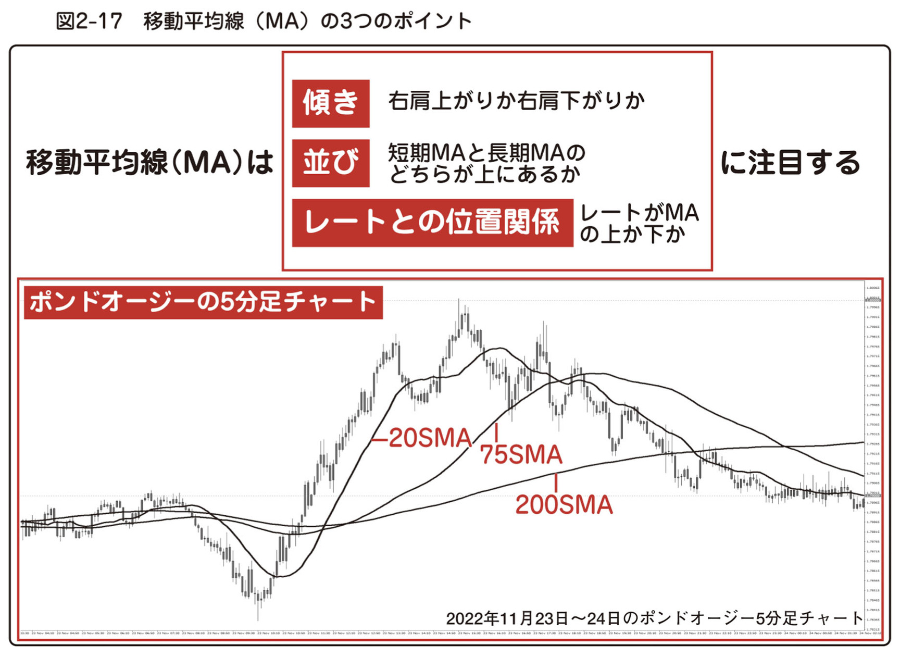

-
 Connect
Connect
-
 👈👈ギガ速FX_index
👈👈ギガ速FX_index
-
👈Signal Card 20
#12_ 移動平均線
- 🔙 前のページへ戻る
- 🔜 次のページへ進む
#12_ 移動平均線
「移動平均線」は、期間を設定して、その期間内のレートの平均値を計算し、その平均値を結んで線にしたものです。 英語では「Moving Average」と書くので、一般的に「MA（エムエー）」と呼ばれています。
単純に「「期間中の終値の合計 ÷ 期間数」」で計算したものは「単純移動平均線」と言います。 英語では「Simple Moving Average」。 その頭文字をとって「SMA（エスエムエー）」と呼ばれます。
本書でもこれ以降、移動平均線は MA、単純移動平均線は SMA と略して表記します。
日足チャートの場合、5sma といえば 「 5日間 のレートの終値の合計 ÷ 5 」で計算した平均値を次々結んで行った線になります。
20sma といえば、20日間のレートの終値の平均値を結んだ線です。
私が取引のタイミングを計るのは ５分足チャート。 ５分足チャートの 20sma は、現在のローソク足から数えて 20 本分のローソク足の終値の平均値を結んだ線になります。 5 分 × 20 本分ですから 100 分間のレートの移動平均になります。
リオン式 Zone トレードで使う最も期間の短い MA は 20sma です。 より詳しい解説は第３章に 譲る[ゆずる]
양보하다 として、ここでは MA の見方や MA を使って実際のトレードを行うための基本的な考え方について解説します。
ローソク足だけを見ていると、時に大陽線や大陰線が出現したかと思うと、ヒゲの長い足が連続したり、陽線・陰線が 交互[こうご]
かわるがわる。たがいちがい。
교대 に出たり、ひとつひとつの動きが不規則で、値動きの全体像を見失いかねません。
それを回避するひとつの方法は、ローソク足の高値同士、安値同士を線で結ぶトレンドラインです。 トレンドラインを引いて、そのラインからローソク足がはみ出ないように全体を囲い込むことで、値動きの方向性 や 勢い が分かります。
MA もトレンドライン同様、レートの平均的な方向性 や 勢いを読み取るために使います。
MA は、色々なパターンで描かれて行きますから、視覚的にも相場の流れが掴み[つかみ]
手で握ること、つかむことやすいと思います。
複数の期間の MA を表示することで、短期 MA と長期 MA の並び（位置関係）からもトレンドの変化や勢いを、より複合的に判断できます。
ローソク足（レート）自体と MA の位置関係からもトレンドや勢いを判断できるので、さらにトレードの判断材料を増やして行けます。
これらを MA から読み取ってエントリー根拠を固めて行きます（図2-17 ）。
図2-17 移動平均線（MA）の３つのポイント